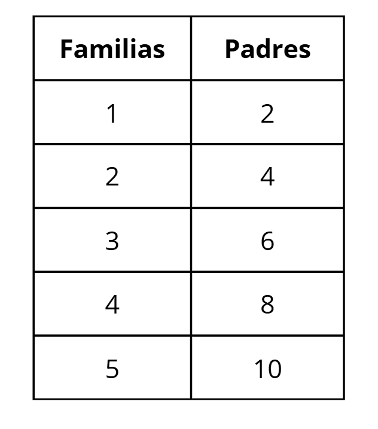

Un patrón es una secuencia de números que sigue una regla fija o constante para pasar de un término al siguiente. Los patrones nos ayudan a reconocer regularidades, predecir el siguiente número y entender cómo crecen o disminuyen las secuencias.
Aritmético
Un patrón aritmético se construye sumando o restando un número fijo (la diferencia común) a cada término para obtener el siguiente
Ejemplo:
3, 6, 9, 12, 15...
Aquí se suma 3 en cada nuevo término.
Geométrico
Un patrón geométrico se forma multiplicando o dividiendo por un número fijo (la razón común)
Ejemplo:
2, 4, 8, 16, 32...
Aquí se multiplica por 2 en cada nuevo término.
La constante de proporcionalidad es el número fijo que relaciona dos cantidades en una relación proporcional. Puede ser el número por el que se multiplica o divide para pasar de una cantidad a otra.
EJEMPLO:
Aquí vemos que el número de padres aumenta de 2 en 2. Es así que la constante de proporcionalidad es 2.
Relación: Padres = 2 × Familias
Esto representa una relación lineal, donde dos cantidades cambian juntas siguiendo un patrón fijo de multiplicación. Ahora, ¿cómo se representa con letras?
f = número de familias
p = número de padres
Con esto, tendríamos que p = 2 × f. Esta ecuación muestra cómo se relacionan ambas cantidades de forma proporcional.
No todas las secuencias o patrones son proporcionales:
1. ¿Cuál es el siguiente número del patrón 4, 8, 12, 16, …?
2. Observa la secuencia: 2, 4, 8, 16, 32, … ¿Qué tipo de patrón es?
3. Si en cada flor hay 5 pétalos, ¿cuántos pétalos hay en 3 flores?
4. En la serie 5, 10, 20, 40, 80…, ¿qué tipo de patrón es?
5. Si una relación se expresa como y = 4x, ¿cuál es la constante de proporcionalidad?
6. En una granja hay 4 gallinas por corral. ¿Cuántas gallinas hay en 7 corrales?
7. En la serie 3, 6, 12, 24..., ¿cuál será el 7.º término?
8. Si la relación entre kilogramos (x) y precio (p) es p = 7x, ¿cuánto costarán 9 kg?
9. Si en cada caja hay 6 lápices, ¿cuántos lápices (y = total de lápices) hay en x cajas?